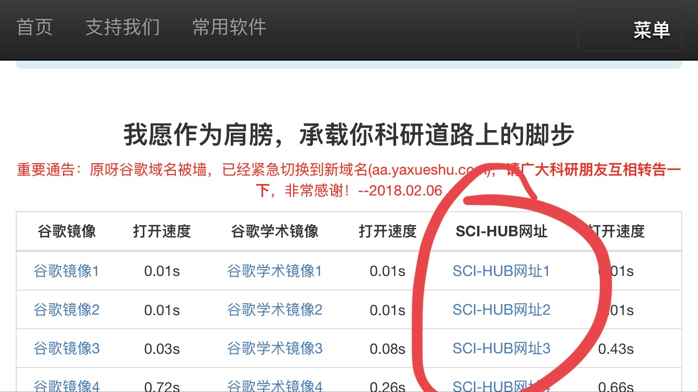

AMR美国管理学会评论2019年7月论文摘要（Volume44,Issue3）
来自编辑（From the Editor）
0. 编辑寄语：对现象理论的呼唤
目前在《美国管理学会评论(AMR)》上发表的文章，都是严谨、精心设计的理论，这些理论在同行评审过程中得以幸存，从而形成了随后的经验研究。编辑认为，在瞬息万变，不确定和复杂的世界中，尤其需要实践者的见解。学者要与从业者的紧密联系，确保理论扎根于现象和有意义的组织问题。如果学者们开始关注当代组织现象，那么我们的理论将更有可能是新颖的、有见地的，这两个特征经常用来衡量文章的“贡献”。
参考文献：Robert E. Ployhart and Jean M. Bartunek, 2019: Editors’ Comments: There Is Nothing So Theoretical As Good Practice—A Call for Phenomenal Theory. AMR, 44, 493–497, https://doi.org/10.5465/amr.2019.0087
专题论坛介绍（Introduction to Special Topic Forum）
1. 关键时刻的多样性：复杂现象的新理论
2015年，AMR在关键时刻发布了关于多样性的特别主题论坛（Special Topic Forum，简称STF）的论文征集，以应对管理环境的变化。这引发了有关普遍理论对管理多样性的假设、范围和影响的问题。而四年后，社会趋势使该主题的论文征集变得更加紧迫和相关。
这些趋势对当前的知识水平而言，既
不利又具有破坏性。但它们也为探讨新问题、发展关于多样性的新理论提供了机会。
该STF中发表的文章通过指出我们在不断变化的环境的若干方面，以及与之相关的复杂性，从而推进多样性理论。
首先，我们追踪过去五十年来多样性理论的发展轨迹，以此开始对STF的介绍。重点介绍了社会层面的各种时代变迁和管理学院内部标志着多元化领域的崛起。
然后，我们描述当前的关键时刻，重点介绍文章如何解决我们最初的论文召集中发现的问题。
最后，我们提供了几种进一步的理论途径，这些途径综合了在当前关键时刻研究多样性的复杂性、不可预测性和重要性。
参考文献：Stella M. Nkomo, Myrtle P. Bell, Laura Morgan Roberts, Aparna Joshi, and Sherry M. B. Thatcher, 2019: Diversity at a Critical Juncture: New Theories for a Complex Phenomenon. AMR, 44, 498–517, https://doi.org/10.5465/amr.2019.0103
2. 基于实践的多样性理论：重新说明组织中的平等与不平等
在本文中，我们将实践理论作为一种新的理论视角，以更好地理解组织中多样性的复杂性。我们以实践理论的关系本体论(relational ontology)及其主要的概念和方法论思想相结合的方式，
重新说明该领域的个人主义(individualism)与社会主义(societism)之间的本体论二元论(ontological dualism)。
由此，我们发展了一种基于实践的多样性理论。我们认为，通过实践(practices)及其之间的联系，是分析和研究最佳组织多元化社会生活的单位，而不是通过个人(individuals)或谈话(discourses)。
我们通过两个研究实例将这种理论视角应用于组织的（不）平等研究。这些例子说明了职业指导的实践如何与现实中的发生（或再次发生）不平等联系在一起，以及一个舞蹈组织如何通过混合练习来实现的平等社会秩序。
在讨论部分，我们强调实践理论对多样性的价值。以实践为基础的多样性理论更新了多样性研究的议程，推进了二元论形式的理论化。按照实践的理论逻辑，重新概念化多样性实践，并将与多样性有关的现象视为社会秩序产生实践的净效果。
参考文献：Maddy Janssens and Chris Steyaert, 2019: A Practice-Based Theory of Diversity: Respecifying (In)Equality in Organizations. AMR, 44, 518–537, https://doi.org/10.5465/amr.2017.0062
3. 多样性、主动性、有效性：意外后果的类型学理论
提倡多样性的目的，是帮助面临社会劣势的群体，在组织中取得更好的成果，但实际效果不一定如预期所料。为了加深对多样性计划的影响的理解，作者开发了一种意想不到的后果的类型学理论。
作者认为，多样性倡议会产生四种意想不到的后果类型：①适得其反（消极的多样性目标进度），②消极的溢出（对多样性目标进度以外的结果产生不良影响）， ③积极的溢出（对多样性目标进度以外的其他结果产生了理想的影响）和④错误的进展（改进的多样性指标，而没有获得真正的多样性目标进度）。
然后，作者从信号的角度，来确定这四种类型的基础机制，以及最有可能产生的多样性实践类型。
由此产生的类型学理论，不仅可为先前关于多样性倡议的意外后果的相关研究提供组织框架，而且还指定了新的意外结果类型，确定作为其根本原因的信号，并指出多样性倡议是相互关联(interrelated)和多重决定(multidetermined)的。
总的来说，这些贡献推动了对多样性倡议有效性的更广泛的概念化，其中必须考虑更广泛的机制和成果，以及它们之间的关系。本文关于非计划中的后果提出更全面的理论，为提高多样性倡议的有效性提供了基础。
参考文献：Lisa M. Leslie, 2019: Diversity Initiative Effectiveness: A Typological Theory of Unintended Consequences. AMR, 44, 538–563, https://doi.org/10.5465/amr.2017.0087
4. #BlackEmployeesMatter：重大威胁，身份融合和在组织中实施积极偏差
尽管认识到事件的重要性，研究人员却很少探索更广泛的社会事件对员工的工作经验和行为的影响。本文结合事件和社会身份的观点，以开发跨层次的理论模型来分析大型威胁的溢出效应。作者将大型威胁被定义为广泛媒体关注的负面的、大规模的、与多样性相关的事件。作者着重研究执法部门针对美国黑人实施的广为宣传的暴力事件，作为研究中的重大威胁。作者建议，由于巨大威胁发生时，内部心理(intrapsychic)过程和群体水平(group-level)过程的会相互结合，从而导致少数群体经历身份融合，这涉及通过情感和认知途径使组织和社会身份模糊化。
作者进一步提出，身份融合迫使少数群体从事任务和关系积极偏离行为：亲群体(pro-group)的声音和关系桥接(relational bridging)。作者还提议，组织环境中的各种因素，包括领导者的同情心、包容性的组织氛围和组织人口统计学因素，都可以为少数族裔员工的赋能，增强了面对大规模威胁的能力。
参考文献：Angelica Leigh and Shimul Melwani, 2019: #BlackEmployeesMatter: Mega-Threats, Identity Fusion, and Enacting Positive Deviance in Organizations. AMR, 44, 564–591, https://doi.org/10.5465/amr.2017.0127
5. 放松分类的思维：扩展组织中人口身份的理论和研究范围
传统的人口统计群体系统，与个人如何理解自己的人口统计身份越来越不符。对于组织学者而言，这种错位对于组织中的人口多样性的理论和实证研究具有重要意义；传统分类系统与个人的人口身份之间的失调也对寻求创建包容性工作环境的管理人员具有重要意义。
本文提供了一个概念框架，阐明了与传统分类系统不符的四种类型的人口统计身份，而这些类型在现有组织多样性研究或组织中并未得到充分认识：类别内的多样性(intracategorical multiplicity)，类别内的移动性(intracategorical mobility)，类别内的不确定性(intracategorical uncertainty)以及本质上属于类别的身份(identities that are acategorical in nature)。
本文以此框架为基础进行理论分析，即以这些非规范性方式进行人口统计学识别的个人可能会遭受分类威胁，这是在多样性学术研究中很少研究的一种特殊形式的身份威胁。因为在基于传统分类系统的组织中，他们对身份自治和身份合法性的需求，可能使他们感到沮丧。本文还对个体的人口身份的变化和组织环境中的变化对分类威胁的体验的影响进行了理论化的研究。
参考文献：Judith A. Clair, Beth K. Humberd, Elizabeth D. Rouse, and Elise B. Jones, 2019: Loosening Categorical Thinking: Extending the Terrain of Theory and Research on Demographic Identities in Organizations. AMR, 44, 592–617, https://doi.org/10.5465/amr.2017.0054
6. 社会阶层转型者：他们的文化能力和组织重要性
社会阶层过渡者，指在组织中从一种社会阶层转移到另一种社会阶层的人。本文提供了一个理论框架，描述社会阶层过渡者的经验和文化能力。有证据表明，许多人在一生都在从一种社会阶级过渡到另一种社会阶级。但是，目前缺乏了解这些人在工作场所的经验或其在组织中的影响的理论框架。这种遗漏是必然的，因为社会阶层是多样性的渗透和交叉组成的，而在社会阶层之间过渡的人们可能会积累来自不同阶级背景的文化工具。这使得过渡者特别适合于理解和弥合群体内部基于阶级的文化差异。
作者认为，一个人的文化理解范围取决于其阶级距离、在每个阶级所花费的时间以及过渡的方向。然后，作者阐明阶级过渡者部署其文化技能的可用策略，影响他们选择哪种策略的因素，以及每种策略在个人利益和小组利益之间的权衡因素。最后，讨论了本研究对有关社会阶层与多样性、文化以及群体与团队在文献方面的贡献，并提出了未来的研究方向。
参考文献：Sean R. Martin and Stéphane Côté, 2019: Social Class Transitioners: Their Cultural Abilities and Organizational Importance. AMR, 44, 618–642, https://doi.org/10.5465/amr.2017.0065
7. MOSAIC：通过相关类别和交叉类别的刻板印象模型
尽管人们对广泛的人口统计学知识有了更多的了解，但现有的理论未能充分说明与多种人口统计学类别（如黑人、女性、同性恋、穆斯林）相关的刻板印象如何影响员工评价。我们介绍了MOSAIC（a model of stereotyping through associated and intersectional categories，即通过关联和交叉类别的刻板印象模型），以解释来自不同人口类别的刻板印象如何影响对员工的期望度(expectations)和可见度(visibility)。
利用MOSAIC可以理解以前被视为异常的结果，并且在理论上调和了个人所经历的优势和劣势模式（例如，为什么黑人女性员工因自信而面临更少的抵制，但晋升的可能性和收入却都比白人女性员工低得多）。将交叉性研究扩展到管理学，我们引入了相关人口类别(associated demographic category)的概念，我们将其定义为与另一个人口类别具有隐式认知联系的类别。
MOSAIC建议感知者整合来自个人基础、交叉和相关类别的刻板印象，而这种整合会对刻板印象产生放大或稀释的作用。然后，这种集成的刻板印象内容将产生禁止性、规范性和可见性模板，以及解释期望出现的原因。因此，MOSAIC从高级微观的角度，解释了特定的人口统计类别配置，对可预测的刻板印象、期望和评估模式的产生过程和原因。
参考文献：Hall, E. V., Hall, A. V., Galinsky, A. D., & Phillips, K. W. (2019). MOSAIC: a model of stereotyping through associated and intersectional categories. Academy of Management Review, 44(3), 643-672. https://journals.aom.org/doi/10.5465/amr.2017.0109
对话（Dialogue）
8. 行动、内在性与制度变迁
Lok与Willmott(2019)（下称LW）对作者Ivano Cardinale 2018年的AMR文章(Cardinale，2018)提出两个方面的质疑：对包容性的看法，以及对胡塞尔(Husserl)“前摄”(Protention)概念的使用。
他们尤其质疑，这两方面对理解制度理论中的代理和结构的意义，以及对制度变革的意义。相反，他们建议采取代理和结构互为构成(mutually constitutive)的观点。
在本文中，作者试图解决LW的担忧。 首先，作者将讨论LW提出的观点的缺点，可以通过对参与者和结构的理解来克服这些缺陷。因为参与者和结构会随着时间的流逝而相互影响，而在每个时刻都相对独立。 然后，我将解释为什么项目与专长之间的区别对于理解参与者如何根据特定的行动方针而至关重要
参考文献：Ivano Cardinale, 2019: On Action, Embeddedness, and Institutional Change. AMR, 44, 673–676, https://doi.org/10.5465/amr.2019.0026
9. 表演理论，变革组织：对Marti和Gond的回应
Marti和Gond(2018)最近试图通过开发绩效模型，并且阐明界定该过程的边界条件，以扩展我们对“理论如何塑造社会现实”的理解。
Marti和Gond尝试开发一种分析模板，来研究理论的有效性和影响力，并充分分享了他们对这种理论化工作的巨大潜力的总体看法。
尽管我们赞扬Marti和Gond的这个研究，但我们认为该的框架存在两个基本缺陷。 首先，Marti和Gond将理论概念化为一个客观的独立实体。 其次，他们以线性、顺序的过程来描述(characterize)理论的效果。
本文的观点则与其相反，作者将理论概念化为内在的关系，即必须与行为者(actors)、制造物(artifacts)、实践(practices)和其他理论同时考虑。而且需要根据动态、非线性的过程来描述理论的效果。 我们认为，将概念进行关联概念化和描述理论效果会动态增强管理研究的执行潜力。
参考文献：Luciana D’Adderio, Vern Glaser, and Neil Pollock, 2019: Performing Theories, Transforming Organizations: A Reply to Marti and Gond. AMR, 44, 676–679, https://doi.org/10.5465/amr.2018.0378
10. 绩效：不是终点，而是持续的旅程
本文作者赞扬Marti和Gond(2018)突出表现力的重要性。在他们的模型中，以文化共鸣的方式挑战现有实践的新理论的积累增加了实验的可能性（命题1）。反过来，尝试新理论，会增加出现异常的可能性（命题4），从而使不信服的行为者增加根据新理论改变实践的可能性（命题7）。
Marti和Gond还介绍了六个“绩效的边界条件”，即“确定理论是否将塑造社会现实”(2018：487)。
Marti和Gond指出，他们对绩效的“社会机制”方法背离了本文作者所阐述的“本体论立场(onto-epistemological position)” (Garud, Gehman, & Tharchen, 2018)。在这次对话中，本文作者阐明了“持续性表现(performativity as ongoing journeys)”的观点，并将其与Marti和Gond的文章中阐述的自我实现(self-fulfilling)的绩效观进行了对比。
参考文献： Raghu Garud and Joel Gehman, 2019: Performativity: Not a Destination but an Ongoing Journey. AMR, 44, 679–684, https://doi.org/10.5465/amr.2018.0315
11. 关于自我实现理论的后实证主义评论
在社会科学和经济科学的广阔领域中，有充分的文献记载并建立了某种理论，使它们得以自我实现，因为这些理论塑造了文献作者所描述的社会现实(Barnes, 1974, 1982; Merton, 1948)。Marti和Gond（2018）在其最近的文章中强调了该文献中的一个重要空白——也就是说，我们对何时以及如何使实现自我理论的了解并不多。 考虑到这一研究空白，他们提出了一种自我实现理论的过程模型，并确定了确定理论是否实现自我的六个边界条件。
尽管Marti和Gond的文章为本文作者对理论工作的社会场景的理解做出了重要贡献，但本文作者对其所提出的论证的实证主义/现实主义前提提出了质疑。理论被视为描述外部现实的分析系统，因此基本上以存在一个独立于我们的理论的经验为前提。尽管人们公认，当理论发表并进入社会世界时，该理论可能会影响持续被塑造的现实。
Marti和Gond对实验和异常的讨论，还基于研究人员访问外部现实，以测试和完善其理论的能力。因此，假设随着研究的进行，理论将越来越接近于事实（尽管代理的作用在此过程中得到认可）。这些前提是实证主义或现实主义者的科学哲学的标志。但是，对于不是实证主义说服力的研究人员来说，这些前提是站不住脚的。本文将展示自我实现理论的故事会有和差异。
参考文献：Masoud Shadnam, 2019: A Postpositivist Commentary on Self-Fulfilling Theories. AMR, 44, 684–686, https://doi.org/10.5465/amr.2017.0460
12. 理论如何实现自我？澄清Barnesian表现力的过程
为了探究理论何时能够实现自我实现（Marti＆Gond，2018），我们首先必须就理论如何自我实现建立一个过程模型。我们的批评家提出了有关过程模型的重要问题，这就是为什么我们使用此响应来澄清关于Barnesian过程的论点的原因性能。在第一部分中，我们通过解释为什么Barnesian的绩效与组织和管理理论相关，来为我们的回应打下基础。在第二部分中，我们展示了我们的模型与批评家的重要见解相一致：我们展示了自我实现的理论为何可以成为"正在进行的旅程(ongoing journeys)"的一部分(Garud & Gehman, 2019)，异常(anomalies)是如何导致新理论的，以及为什么我们的模型对民间理论很重要(D’Adderio et al., 2019)。在第三部分中，我们通过讨论“现实”在过程模型的每个步骤中扮演的角色，从科学哲学的角度反思了流程模型。因此，我们解决了我们的流程模型是“实证主义的”(Shadnam, 2019: 684),，“具代表性的”(Garud & Gehman, 2019: 680)和“本质主义的”(D’Adderio et al., 2019: 677)的担忧。
参考文献：Emilio Marti and Jean-Pascal Gond, 2019: How Do Theories Become Self-Fulfilling? Clarifying the Process of Barnesian Performativity. AMR, 44, 686–694, https://doi.org/10.5465/amr.2019.0024
13. 为什么“工具相关者理论”现在是时候退休了
Jones，Harrison和Felps(2018) 在最近的文章“如何应用工具性的利益相关者理论中可以提供可持续的竞争优势(How Applying Instrumental Stakeholder Theory Can Provide Sustainable Competitive Advantage)”中，巧妙地回应了Freeman，Harrison，Wicks，Parmar和de Colle(2010)的呼吁：在工具利益相关者理论（instrumental stakeholder theory, IST）和公司基于资源的观点（resource-based view of the firm, RBV）之间建立理论联系。
作者赞扬他们的研究贡献是“第一个严格将基于资源的标准，应用于评估与利益相关者进行道德互动的策略如何与竞争优势的可持续性相关的评估”(Jones et al., 2018: 373)。本文亦认同。
对该主题的严谨性是不可否认的，我们发现他们论证的逻辑没有错。相反，由于Jones及其同事出色地展示了将IST战略与可持续竞争优势联系起来的必要性。因此我们在此回应中认为，他们的工作无意中表明了为什么该联系应该成为IST的必然结局。
在阅读了这篇有说服力的文章之后，我们中那些有兴趣促使更多管理人员以道德的方式与其利益相关者互动的人，将认识到IST概念的退休时机已到。因为Jones及其同事已经有意无意地证明了，基于工具性动机拟订某种形式的利益相关者理论的危险性和徒劳性。
参考文献：David Weitzner and Yuval Deutsch, 2019: Why the Time Has Come to Retire Instrumental Stakeholder Theory. AMR, 44, 694–698, https://doi.org/10.5465/amr.2018.0342
14. 利益相关者工具理论使建立在道德基础上的关系对于注重底线的管理者而言非常可取
本文是与Weitzner和Deutsch(2019)进行对话，以澄清本文作者的文章“如何运用工具性利益相关者理论可以提供可持续的竞争优势(How Applying Instrumental Stakeholder Theory Can Provide Sustainable Competitive Advantage)” (Jones, Harrison, & Felps, 2018)。本文着重强调一些共识领域，然后提出一些不同意的观点。
参考文献：Jeffrey S. Harrison, Will Felps, and Thomas M. Jones, 2019: Instrumental Stakeholder Theory Makes Ethically Based Relationship Building Palatable to Managers Focused on the Bottom Line. AMR, 44, 698–700, https://doi.org/10.5465/amr.2018.0442
学术灵感：书评及其他（What Inspires the Academy: Book Reviews and Beyond）
15. 时代的尽头：记忆、知觉和现实的三个故事模型
“时代”的概念和对时代之间过渡的研究，已经在组织研究中浮出水面，涉及各种理论和主题。但是，由于概念和方法上的局限性，变化的整体过程，和即将结束的时代与即将到来的时代之间传递的社会心理模式，两者之间的纠缠尚未得到解决。
在本文中，作者开发了一个模型。在该模型中，组织时代的结束，被概念化为记忆和感知的认识论要素与现实的本体论要素之间的相互作用。
本文回顾了以三本小说为基础的三个案例，它们采用不同的概念模式，探讨记忆、知觉和现实之间的联系如何帮助定义和解释组织时代。在这三个案例的基础上，本文将讨论组织学者如何弄清与时代变化相关的概念和实践问题，并最终学习如何组织和管理这种变化。
参考文献：Stefano Tasselli, 2019: At the End of an Era: A Model and Three Tales of Memory, Perception, and Reality. AMR, 44, 701–717, https://doi.org/10.5465/amr.2018.0008
确定样本量与功效分析（power analysis）
虽然很多营销类期刊都不会深究样本量，但是如《心理学报》这种专业期刊，在投稿时需要提供确定样本量的参考资料。到目前为止，我在问卷调查时确定的样本量都是根据其他同类型研究的样本量来确定的，并未深入了解为什么我需要这么多样本。
在假设检验中，统计模型既定的情况下，下面四个参数是有相关关系的：
* 显著性水平 α
* 样本量 N
* 统计效力 Power 即 1-β
* 效应量 ES
简单来说，如果你的统计功效为50%，那么你做一次实验的话，有50%的可能得到p < 0.05，50%可能得到p > 0.05。所以假如你的实验的统计功效为50%，怎么能够说明审稿人你得到这个结果不是运气？
如果你的样本量很小，并且得到了P = 0.001的话，那么你计算出来的效应量是非常大的（inflated）。
摘自How to Justify Your Sample Size - 知乎
反正，根据这些那些的原因，在调查前期有必要了解需要回收的样本量。
至于功效分析教程推荐G*Power。
冯姐SSCI论文查找经验
SSCI论文在哪里找？
SSCI（Social science citation index，译作社会科学引文索引）为美国科学情报研究所（Institute for Scientific Information，简称ISI）建立的综合性社科文献资料库，涉及经济、法律、管理、心理学、区域研究、社会学、资讯科学等。收录 50 个语种的 1700多种重要的国际性期刊，累计约 350 万条记录。
ISI web of knowledge是Thomson Scientific网络平台（收费）。通过"http://apps.webofknowledge.com" 登录进入，或通过学校图书馆（如:https://login.libezproxy.must.edu.mo/login?url=http://apps.webofknowledge.com/) 或机构网站提供的入口进入。
该产品是汤森路透公司的online学术服务产品，它包含了子产品 “web of science”数据库以及其他资源。Web of science数据库就是我们平时检索SSCI数据时所使用的网页。
SSCI在哪里下？
通过在SSCI查到文章的DOI号，

然后打开一个神奇的、经常会消失的网站，
粘贴在搜索框里。
网站不见怎么办？
因为这个网站经常会消失，
所以可以通过一个浏览器提示不安全的网站来查找它最新的地址。

任姐Amos处理法
文章目录：
一、项目打包
Item Parceling
这部分在SPSS软件完成
-1. 数据录入
问卷数据收集好后，需要先转换成SPSS格式，具体操作如下：
打开SPSS软件，左下角会有两个页面，我们先点开“变量示图”页，然后“度量”项这里，我们选的是“度量”；“名称”这边就是每一个问卷的item（每个item对应一道问卷题目的代号），讲究的那可以在标签上写着上英文备注，其他参数一般默认。
回到数据页面，把收集好的直接从Excel里面复制粘贴过来，这就是我们的原始数据。
0. 为什么要打包？
在结构方程模型里，一般每个变量我们用3到4个item比较好一些

例子里create这个变量就有13道题，这个就是题目就比较多，我们不可能把13个因子都写进去。
那么我们首先要进行项目打包。

1. Dimension(维度/尺度)
- 有Dimension：如12items有4个dimensions，则每个dimension包含3个items
- 无Dimension：依据数据大小顺序排列，最小与最大相、次小与次大相加……计算出各项的平均值（若为奇数items，排除最中间项）
2. 分析(A) → 维度缩减(D) → 因素(F)
任姐：“一共有13道题，在选项里面。按大小排序，继续，确定，就得到了，按大小排序，从大到小的一个排序结果。”
那么我们怎么选择哪几个题目放在一起呢？
- 将需要缩减维度的变量全选入「变量(V)」内
- 选项(O)功能下勾选「依据因素负荷排序(S)」
- 根据输出资料的「Communalities」排序
- 变项若为奇数，将中间项删除，变项若为偶数，直接分组，以3~4组为原则（本题共有13个变项，删除第7个）
定义新变项（NCRE1, NCRE2, NCRE3）
第一次选择：第一个值是最大和最小值相加，选码就是create 2+7；第二个就是create 5+6（次大和次小）；第三个就是，倒数第三大的create 3+1。同样的，
第二次选择：12+13，10+11，10+8。
| 第一次选 | 第二次选 | 结果 | |
|---|---|---|---|
| 分组1 (NCRE1) | 1+2 | 12+13 | 1+2+12+13 |
| 分组2 (NCRE2) | 3+4 | 11+4 | 3+4+10+11 |
| 分组3 (NCRE3) | 5+6 | 10+8 | 5+6+10+8 |
任姐：“我们最后选选完以后，我们是不是多余了一项“9”？我们可以直接把它给扔掉了。也就是说，如果题目数量为奇数的话，中间这一项我们可以直接把它给扔掉不要。”
“将第一次选的create 2+7和第二次选的12+13，这四个因子的相加再除以4，然后就得到了平均的4项。”
3. 转换(T) → 计算变量(C)
转换，计算变量(create 2+7+12+13)/4
- 目标变量(T)填入新的变项名称（NCRE1）
- 数值表示式(E)填入维度缩减之选取结果之「平均值」
- 分别将新的变项计算出来
4. 另存新檔
项目打包完以后，其他的变量大概都是3到4个题目，所以问题相比较少，我们就不需要进行项目打包了。
因为这里只有create变量问题相比较多，我们才进行项目打包，然后打包完以后，我们就开始，进行结构方程模型。
二、Amos绘图
接下来进入AMOS软件

1. 绘图
依图所示，在这里共4个变量，就是这个这两个是前导变量，中介变量，结果变量。
- 先点中这个第一个，任意一个拖一个圆，在这个圆上面，根据题项数量按出旁边方框数量。
- Amos中圆形的东西是概念，没有办法观察，只能在方框里放我们那几个item。
- 可以用旋转按钮将模型修正方向。
- 为了美观，可以把整个变量用全选按钮全选中以后，复制原样的复制出其他几个变量，大小统一。
- 然后画完以后，我们先把用线把连接起来
- 首先是自变量到中介变量，用箭头按钮从自变量往中介变量画出一条线；
- 然后再画中介到因变量的箭头线。
- 还有需要注意的是，凡是自变量之间需要一个双向箭头，因为它们相互影响。

- 最后我们还需要画误差，加到中介变量与结果变量的圆框上。双击这个大圆圈，然后就把这个变量的名字打上去，打完一个之后直接双击另一个变量的圆圈输入下一个变量名。
Model 1（SE+IM-SEXP-NCRE）：删除两两相连之线条，仅保留SE和IM之相联；
单向箭头由SE指向SEXP、由IM指向SEXP、由SEXP指向NCRE。
选择 ，凡是 「被单向箭头指入」的大圆，皆加入一个圆，并赋予新加入之圆 Object properties；
「被单向箭头指入」的大圆，皆加入一个圆，并赋予新加入之圆 Object properties；
- 点顶部菜单栏一个倒数第二个“Plugin”，就会把这些误差项的小圆圈自动命名。
- 接下来导入数据，data载入数据，如果加入成功，这边显示n一共有233个数据，如果不成功就显示不出来，还可以用view来检测数据数据，然后点ok。我们在第三列，第三个，然后需要把这些变量赋进去，直接拖进去，让他直就直自动的赋值去了。
- 然后点分析，一般来说我们要设置看哪些东西（任姐：“我一般其实点的比较多，但还是看你具体情况而定”）。
- 分析完以后，计算之前肯定要先保存数据，再按旁边这个“计算”，然后就开始跑了，右下方有显示过程的黄色小框，表示他处在跑数据的过程。
- 你刚跑完以后可以看，我们首先是看df、X2，df=61，然后还有RMSEA在这里。
总结：
| 步骤 | |
|---|---|
 |
1. 选取SPSS数据数据 2. 作业区内依据变项数目划出圆形 3. 依据变项在SPSS内包含的项目划出分支 将变量名称输入圆形内 4. 将变量包含之项目拖曳至方框内 5. Plugins → Name Unobserved Variables将小圆形赋予名称 6. 将各变量（大圆形）两两相连 7. Save the current path diagram 8. Calculate estimates 9. Analysis properties |
2. 记录数据
| ∆X2 | df | ∆R2 | RMSEA | CFI | TLI | |
|---|---|---|---|---|---|---|
| Baseline (变项独立) | ||||||
| Model1 (合并变项) | ||||||
| Model2 (合并变项) | ||||||
| ……… |
三、验证性因子分析与模型判别的原则
为了展示怎么画图，上面先讲画图步骤，假设送上来的数据是合格的，选用了很不错的数据作为例子。
但实际情况下，处理结构方程模型之前的，需要先做验证性因子分析(Confirmatory Factor Analysis, CFA)。
验证性因子分析（CFA）
这里有四个因子，每个因子就用双箭头两两相连，再导入数据。上述所看的数据（如x2，df等）需要记录下来进行对比。我们不就是只做这四因子分析，还要做三因子。
冯姐：“三因子是什么意思呢？”
任姐：“四因子的话就四个嘛，三因子的话就是，把其中两个合在一起，让另外两个保持独立，sef也就是这个这两个合并那个跟这个合并，然后这个跟这个合并，他们就合并完以后就是做三因子的。相当于只有一个项变量，然后他把其中两个合并在一起。”
最后面就是两因子、一因子。
根据三原则比照下来四因子是最好的。
依据三原则找出最佳Model
- 绝对原则：CFI, TLI > 0.90且越大越好；RMSEA < 0.08且越小越好
- 相对原则：∆R2显著与否，显著表示有区别，越显著越好（先看df，差一个df的话，∆R2只要3.8就算显著）
- 就简原则：完全中介最佳，关联线越少越好

验证性因子分析完以后，我要该怎么证明证明我原始模型是最好呢？
三原则与模型判别
同样根据三原则，如下图所示，“模型一”是原始模型，“模型二”就是上面多加一条线，其实也就是不是完全中介了，“模型三”是下面加一条线，“模型四”是上下两条线。

做完以后把这些值相比：
首先，数据需要合格（大于0.9），其次
其次，比如“模型二”，与基础模型相比，一个df所对应的△x2是-3.456。在这里，△x平方值越大就是越显著，
所以“模型三”是最好的，根据相对标准，“模型三”中的1个df代表了5.455的∆X2。
最后，如果所有的标准都合格，而△x平方又比照不出来，那就遵循“就简原则”：越少线越好。如“模型一”线最少，那么如果第二条标准下比对不出模型之间的差异，“模型一”就是最好的。
Q&A
冯姐：“如果这个模型中的这些值有点小（不够0.9）怎么办？”
任姐：“可以做修正，把MI值最大的误差项两两相连（详见：结构方程模型：AMOS的操作与应用 — 吴明隆）。”
参考

Copyright © 2015 Powered by MWeb, Theme used GitHub CSS.